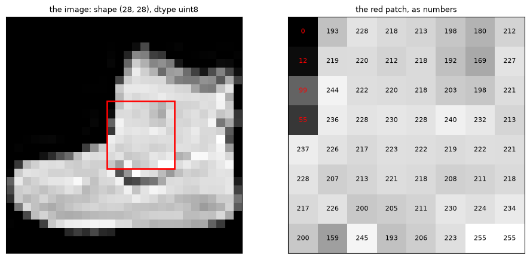
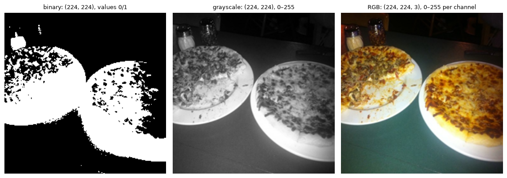
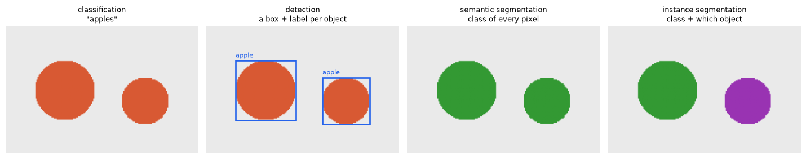
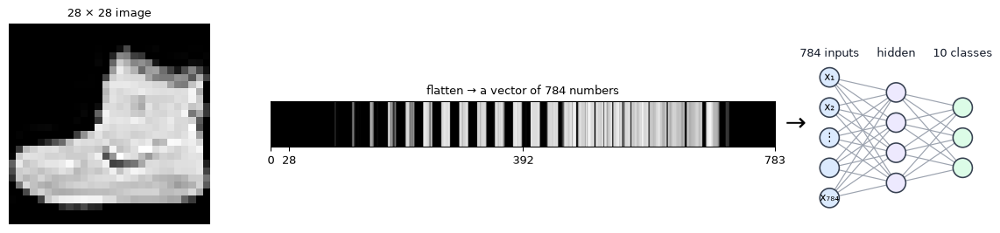
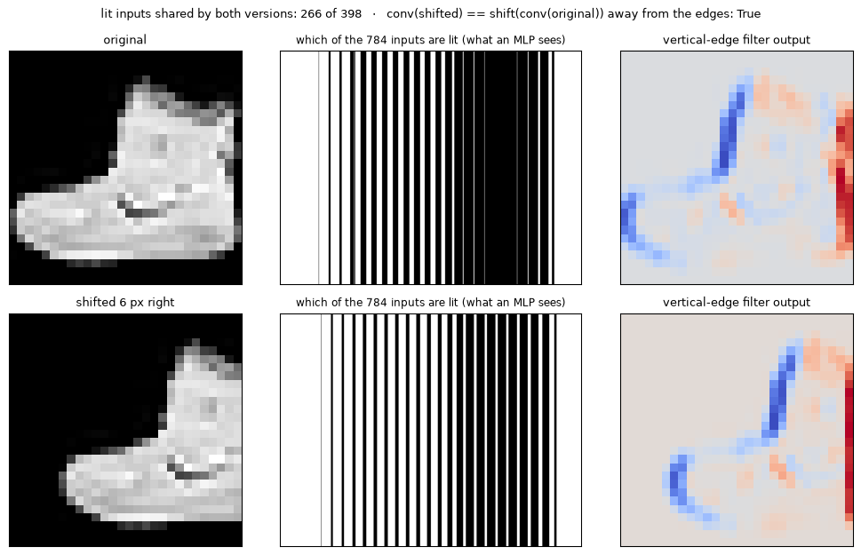

Why Do We Need CNNs?
Images are high-dimensional, spatially structured, and their content can sit anywhere in the frame. A plain MLP ignores all three. Convolutional networks are the architectural answer to each, and this note shows exactly where the MLP breaks.
01 Digital images — what they are to a computer

Python code for this figure
import numpy as np
import matplotlib.pyplot as plt
from matplotlib.patches import Rectangle
from torchvision import datasets
img = np.array(datasets.FashionMNIST(root="data", train=True, download=False)[0][0]) # PIL image → (28, 28) uint8
r0, c0 = 10, 12
fig, axes = plt.subplots(1, 2, figsize=(10, 4.6))
axes[0].imshow(img, cmap="gray"); axes[0].add_patch(Rectangle((c0 - 0.5, r0 - 0.5), 8, 8, fill=False, ec="red", lw=2))
axes[0].set_title(f"the image: shape {img.shape}, dtype {img.dtype}", fontsize=10)
patch = img[r0:r0 + 8, c0:c0 + 8]
axes[1].imshow(patch, cmap="gray", vmin=0, vmax=255)
for (i, j), v in np.ndenumerate(patch):
axes[1].text(j, i, str(v), ha="center", va="center", fontsize=8, color="red" if v < 128 else "black")
axes[1].set_title("the red patch, as numbers", fontsize=10)
for ax in axes: ax.set_xticks([]); ax.set_yticks([])
plt.tight_layout(); plt.show()The one-sentence definition
An image is a 2D grid of pixels (3D if it has colour channels). Each pixel is a number — the intensity at that location. Nothing else.
Shape and typing
- A 28×28 grayscale image: a
(28, 28)array of integers from 0 (black) to 255 (white). - A 1024×768 colour image (1024 wide, 768 tall): a
(768, 1024, 3)array, height first, with 3 channels for R, G, B. - Modern pipelines reshape to
(C, H, W)or(N, C, H, W)for batching.
The size problem
A 224×224 RGB image = 150,528 pixel values. For comparison, a flat tabular dataset usually has 10-100 features. Deep learning on images inherently works with hundreds of thousands of inputs per example — which is why the architecture matters.
02 Image types — binary, grayscale, RGB

Python code for this figure
import numpy as np
import matplotlib.pyplot as plt
from PIL import Image
from pathlib import Path
photo = sorted(Path("data/pizza_steak_sushi/train/pizza").glob("*.jpg"))[0]
rgb = np.array(Image.open(photo).convert("RGB").resize((224, 224)))
gray = np.array(Image.fromarray(rgb).convert("L"))
binary = gray > gray.mean()
fig, axes = plt.subplots(1, 3, figsize=(12, 4.2))
for ax, im, title, cmap in [(axes[0], binary, f"binary: {binary.shape}, values 0/1", "gray"),
(axes[1], gray, f"grayscale: {gray.shape}, 0–255", "gray"),
(axes[2], rgb, f"RGB: {rgb.shape}, 0–255 per channel", None)]:
ax.imshow(im, cmap=cmap); ax.set_title(title, fontsize=10); ax.axis("off")
plt.tight_layout(); plt.show()- Binary — one bit per pixel. 0 or 1. Document scans, segmentation masks.
- Grayscale — one byte per pixel. 0 (black) to 255 (white). MNIST, X-rays.
- RGB — three bytes per pixel. Red, Green, Blue. Natural photos.
Other variants (HSV, LAB, CMYK) exist but RGB and grayscale cover 99% of deep-learning use cases.
03 RGB as a tensor
The three channels
Each colour pixel = a triple (r, g, b) where each component is in [0, 255].
Equivalently, the image is a 3D tensor of shape (H, W, 3) (height, width, channels). Three stacked grayscale images — one for red, one for green, one for blue.
HWC vs CHW
Two conventions you'll meet:
- HWC (height, width, channels) — the natural way images are stored. OpenCV, PIL, matplotlib.
- CHW (channels, height, width) — what PyTorch layers want (a batch is
NCHW), the layout NVIDIA's cuDNN library was built around.
You transpose between them with .permute(2, 0, 1) or .permute(1, 2, 0) constantly. Getting the dimensions wrong is a classic early-days bug.
04 The four computer-vision tasks
Different problems, same CNN backbone with different heads.

Python code for this figure
import numpy as np
import matplotlib.pyplot as plt
from matplotlib.patches import Rectangle
H, W = 120, 180
yy, xx = np.mgrid[0:H, 0:W]
disc1 = (xx - 55) ** 2 + (yy - 60) ** 2 < 28 ** 2
disc2 = (xx - 130) ** 2 + (yy - 70) ** 2 < 22 ** 2
scene = np.full((H, W, 3), 0.92); scene[disc1 | disc2] = [0.85, 0.35, 0.2]
fig, axes = plt.subplots(1, 4, figsize=(15, 3.2))
axes[0].imshow(scene); axes[0].set_title('classification\n"apples"', fontsize=10)
axes[1].imshow(scene); axes[1].set_title("detection\na box + label per object", fontsize=10)
for (cx, cy, r) in [(55, 60, 28), (130, 70, 22)]:
axes[1].add_patch(Rectangle((cx - r, cy - r), 2 * r, 2 * r, fill=False, ec="#2563eb", lw=2))
axes[1].text(cx - r, cy - r - 3, "apple", color="#2563eb", fontsize=8)
sem = np.zeros((H, W, 3)) + 0.92; sem[disc1 | disc2] = [0.2, 0.6, 0.2]
axes[2].imshow(sem); axes[2].set_title("semantic segmentation\nclass of every pixel", fontsize=10)
ins = np.zeros((H, W, 3)) + 0.92; ins[disc1] = [0.2, 0.6, 0.2]; ins[disc2] = [0.6, 0.2, 0.7]
axes[3].imshow(ins); axes[3].set_title("instance segmentation\nclass + which object", fontsize=10)
for ax in axes: ax.axis("off")
plt.tight_layout(); plt.show()The task menu
| Task | Output | Example model |
|---|---|---|
| Classification | One label per image | AlexNet, ResNet, EfficientNet |
| Detection | Boxes + labels | YOLO, Faster R-CNN, DETR |
| Semantic segmentation | Pixel-level class label | U-Net, DeepLab |
| Instance segmentation | Pixel-level mask + instance ID | Mask R-CNN |
Why they all use CNNs (or ViT variants today)
All four tasks share the same hard requirement: extract meaningful spatial features from pixels. The feature-extraction backbone is almost always a CNN or vision transformer; only the final task-specific head differs.
D4 builds the backbone from first principles. A task head for segmentation (U-Net) is a project in D5.
05 The naive MLP approach to images

Python code for this figure
import numpy as np
import matplotlib.pyplot as plt
from torchvision import datasets
img = np.array(datasets.FashionMNIST(root="data", train=True, download=False)[0][0]) / 255
fig = plt.figure(figsize=(12, 3.4))
ax1 = fig.add_axes([0.02, 0.1, 0.2, 0.8]); ax1.imshow(img, cmap="gray"); ax1.set_title("28 × 28 image", fontsize=10); ax1.axis("off")
ax2 = fig.add_axes([0.28, 0.42, 0.5, 0.16]); ax2.imshow(img.reshape(1, -1), cmap="gray", aspect="auto")
ax2.set_title("flatten → a vector of 784 numbers", fontsize=10); ax2.set_yticks([]); ax2.set_xticks([0, 28, 392, 783])
ax3 = fig.add_axes([0.81, 0.1, 0.18, 0.8])
from dlviz import draw_network
draw_network([5, 4, 3], ax=ax3, labels=[["x₁", "x₂", "⋮", "", "x₇₈₄"], None, None], layer_names=["784 inputs", "hidden", "10 classes"])
fig.text(0.79, 0.5, "→", fontsize=22, va="center")
plt.show()The recipe
- Take a 28×28 grayscale image.
- Flatten it into a 784-dimensional vector.
- Feed it into a standard MLP.
- Train with backpropagation.
For MNIST, this works — ~98% accuracy with a modest MLP. The approach breaks down for anything bigger.
06 Why MLPs fail on images — three fundamental limits
Three distinct failures. Each becomes a CNN design principle.
Parameter explosion
For a 224×224 RGB image → first hidden layer of 1,000 units:
150 million parameters for a single layer. Memory, compute, and overfitting all explode.
CNN fix: weight sharing — the same small kernel slides across the whole image.
Spatial structure is destroyed
Flattening loses the information that neighbouring pixels are neighbours. The MLP has to re-learn spatial locality from scratch, from data alone.
CNN fix: local receptive fields — each neuron looks at a small neighbourhood of the input.
No translation invariance

Python code for this figure
import numpy as np
import torch
import torch.nn.functional as Fn
import matplotlib.pyplot as plt
from torchvision import datasets
img = torch.tensor(np.array(datasets.FashionMNIST(root="data", train=True, download=False)[0][0]), dtype=torch.float32) / 255
shifted = torch.roll(img, shifts=6, dims=1); shifted[:, :6] = 0
edge = torch.tensor([[1., 0., -1.], [2., 0., -2.], [1., 0., -1.]]).view(1, 1, 3, 3)
conv = lambda x: Fn.conv2d(x.view(1, 1, 28, 28), edge, padding=1)[0, 0]
on_a, on_b = img.flatten() > 0.1, shifted.flatten() > 0.1
fig, axes = plt.subplots(2, 3, figsize=(11, 6.6))
for row, (x, name) in enumerate([(img, "original"), (shifted, "shifted 6 px right")]):
axes[row, 0].imshow(x, cmap="gray"); axes[row, 0].set_title(name, fontsize=10)
axes[row, 1].imshow((x.flatten() > 0.1).float().view(1, -1).repeat(40, 1), cmap="Greys", aspect="auto")
axes[row, 1].set_title("which of the 784 inputs are lit (what an MLP sees)", fontsize=9)
axes[row, 2].imshow(conv(x), cmap="coolwarm"); axes[row, 2].set_title("vertical-edge filter output", fontsize=10)
for ax in axes.ravel(): ax.set_xticks([]); ax.set_yticks([])
fig.suptitle(f"lit inputs shared by both versions: {(on_a & on_b).sum().item()} of {on_a.sum().item()} · "
f"conv(shifted) == shift(conv(original)) away from the edges: "
f"{torch.allclose(conv(shifted)[:, 8:-1], conv(img)[:, 2:-7], atol=1e-5)}", fontsize=10)
plt.tight_layout(); plt.show()A cat at pixel (10, 10) and the same cat at pixel (100, 100) activate completely different weights in an MLP. The model has no built-in notion that "a cat is a cat regardless of where in the image it appears."
CNN fix: shared kernels and pooling. The same feature detector runs at every position, so a shifted input gives a shifted output (convolution is translation-equivariant), and pooling then makes small shifts matter less (approximate invariance).
07 What CNNs will fix
Each MLP failure corresponds to a CNN design choice:
| MLP failure | CNN fix | Covered in |
|---|---|---|
| Parameter explosion | Weight sharing — same kernel reused everywhere | note 14 |
| Spatial structure destroyed | Local receptive fields — small kernels, not full connections | note 14 |
| No translation invariance | Shared kernels + pooling | note 14, note 16 |
The next note (note 14) derives the convolution operation from first principles — translation invariance + locality — rather than presenting it as a mystery operation. That's the whole payoff.
08 Runnable demo — MLP vs CNN parameter counts
import torch
import torch.nn as nn
# A tiny MLP for 28x28 MNIST
mlp = nn.Sequential(
nn.Flatten(),
nn.Linear(28*28, 128),
nn.ReLU(),
nn.Linear(128, 10),
)
# A tiny CNN for the same task
cnn = nn.Sequential(
nn.Conv2d(1, 32, kernel_size=3, padding=1), # 32 feature maps
nn.ReLU(),
nn.MaxPool2d(2), # 28 -> 14
nn.Conv2d(32, 64, kernel_size=3, padding=1),
nn.ReLU(),
nn.MaxPool2d(2), # 14 -> 7
nn.Flatten(),
nn.Linear(64*7*7, 10),
)
def count(model):
return sum(p.numel() for p in model.parameters())
print(f"MLP params: {count(mlp):,}")
print(f"CNN params: {count(cnn):,}")
print(f"Ratio: {count(mlp) / count(cnn):.2f}x fewer in CNN")MLP params: 101,770 CNN params: 50,186 Ratio: 2.03x fewer in CNN
Scale it up to 224×224 RGB
# Realistic size for ImageNet-scale models
mlp_big = nn.Sequential(
nn.Flatten(),
nn.Linear(224*224*3, 1000), # 150M weights in this one layer alone
nn.ReLU(),
nn.Linear(1000, 1000),
)
print(f"MLP (224x224 RGB -> 1000 hidden): {count(mlp_big):,} params")
conv_blocks = [nn.Conv2d(3, 64, 3, padding=1), nn.ReLU(), nn.MaxPool2d(2), # same 64 filters applied everywhere
nn.Conv2d(64, 128, 3, padding=1), nn.ReLU(), nn.MaxPool2d(2),
nn.Conv2d(128, 256, 3, padding=1), nn.ReLU(), nn.MaxPool2d(2)] # → (256, 28, 28)
# Careless head: flatten the 256×28×28 map into a dense layer — the explosion comes right back
cnn_flat = nn.Sequential(*conv_blocks, nn.Flatten(), nn.Linear(256 * 28 * 28, 1000))
# Modern head: average each of the 256 channels down to one number first (global average pooling)
cnn_gap = nn.Sequential(*conv_blocks, nn.AdaptiveAvgPool2d(1), nn.Flatten(), nn.Linear(256, 1000))
conv_only = sum(count(m) for m in conv_blocks)
print(f"the three conv blocks themselves: {conv_only:,} params")
print(f"CNN + flatten → Linear head: {count(cnn_flat):,} params (the dense layer is {256*28*28*1000:,} of them)")
print(f"CNN + global-average-pool head: {count(cnn_gap):,} params = {count(cnn_gap) / count(mlp_big) * 100:.2f}% of the MLP")MLP (224x224 RGB -> 1000 hidden): 151,530,000 params the three conv blocks themselves: 370,816 params CNN + flatten → Linear head: 201,075,816 params (the dense layer is 200,704,000 of them) CNN + global-average-pool head: 627,816 params = 0.41% of the MLP
The takeaway
The MLP needs hundreds of millions of parameters just to accept a modest-sized colour image. The convolutional layers that do the feature extraction need well under half a million, because they share weights and look only locally. The second comparison holds a lesson too: feeding a big feature map straight into a dense layer brings the explosion back, which is why modern CNNs shrink each channel to one number with global average pooling before the classifier (ResNet does exactly this, note 19).
That is the entire argument for CNNs in one benchmark.